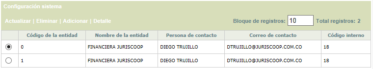
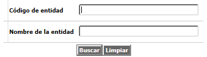
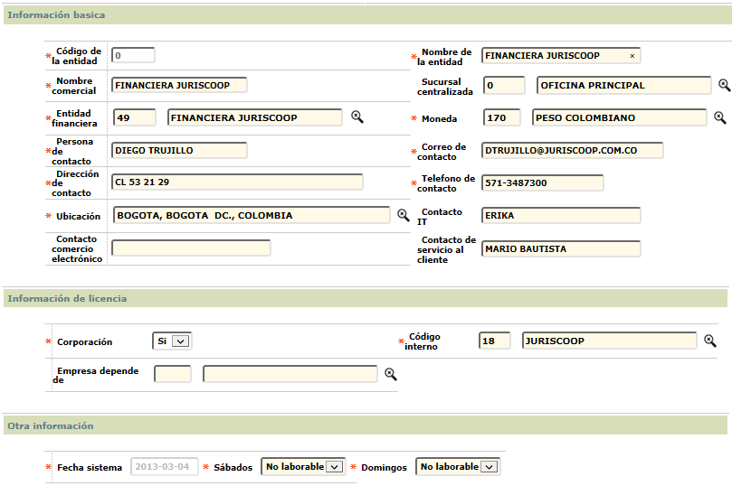
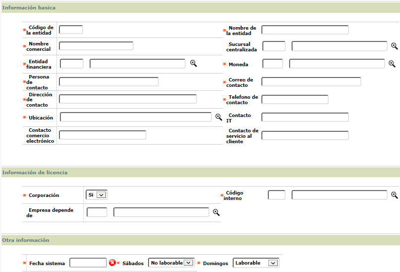
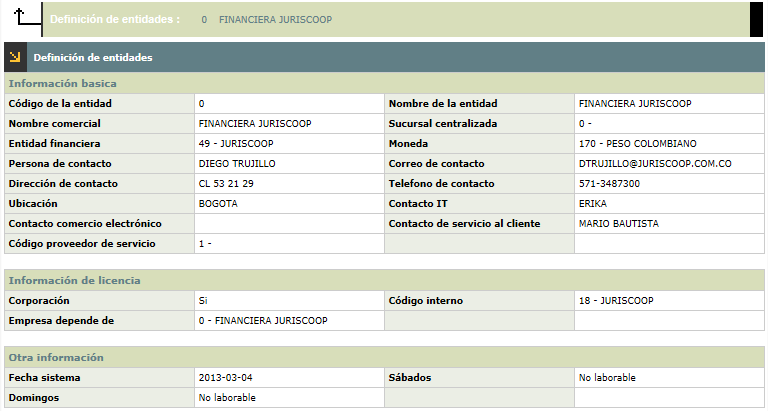
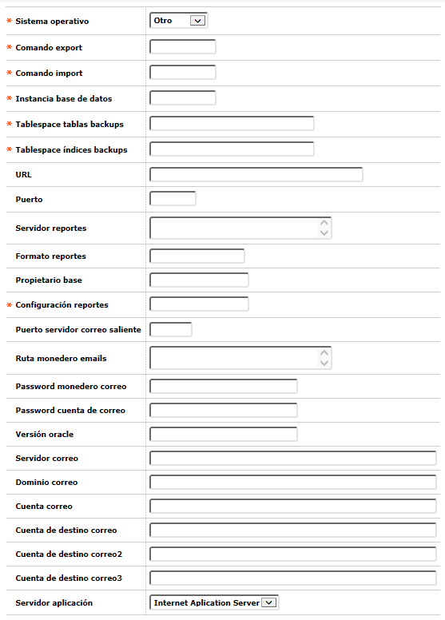

Definición de entidades |
Mediante esta función se habilita la consulta y/o mantenimiento de la tabla en la cual se almacena toda la información relacionada con el licenciamiento corporativo de la aplicación Administración de Tarjetas de Crédito OpenCard®.
El formulario contiene la opcion Configuraci�n sistema. Adicionalmente cuenta con un filtro de búsqueda.

Filtro: Se pueden realizar consultas a través de las siguientes opciones:

Código de entidad |
campo en el que se registra el código y nombre de cada corporación o entidad financiera licenciada |
Nombre de la entidad |
Campo alfanumérico, en el que se registra el nombre con el que se encuentra radicada la corporación o entidad financiera licenciada, ante la Cámara de Comercio o quien haga sus veces |
Actualizar: Si el usuario invoca la opción Actualizar se despliega un nuevo formulario en el cual todos los campos son modificables a excepción de la Fecha sistema.

Información basica:
Código de la entidad |
Campo obligatorios en los que se registra el código y nombre de cada corporación o entidad financiera licenciada. |
Nombre de la entidad |
Campo alfanumérico de 20 posiciones, obligatorio, en el que se registra el nombre con el que se encuentra radicada la corporación o entidad financiera licenciada, ante la Cámara de Comercio o quien haga sus veces. |
Nombre comercial |
Campo alfanumérico de 20 posiciones, obligatorio, en el que se registra el nombre comercial con el que se encuentra radicada la corporación o entidad financiera licenciada, ante la Cámara de Comercio o quien haga sus veces. |
Sucursal centralizada |
Campo que contiene lista de valores poblada en la opción Estructura orgánica de las Tablas de la entidad financiera, de la que puede seleccionarse el código de la dependencia centralizadora tanto del movimiento operativo como contable de cada corporación o entidad financiera licenciada. |
Entidad financiera |
Campo alfanumérico de 3 posiciones que contiene los códigos correspondientes a cada entidad financiera de acuerdo con los valores asignados en la opción Entidades Financieras; en el campo de salida ubicado a la derecha aparece el nombre de la entidad asociado al código seleccionado. |
Moneda |
En este campo se selecciona de la lista de valores el código de la moneda oficial o defecto para cada corporación o entidad financiera licenciada. |
Persona de contacto |
Campo alfanumérico de 30 dígitos, obligatorio, contiene el nombre de la persona responsable o indicada del área de producción de Tarjeta de crédito o Crédito rotativo, a quien, en caso de ser necesario, se puede contactar en primera instancia. |
Correo de contacto |
En este campo alfanumérico de 30 dígitos, no obligatorio, se registra la dirección de correo electrónico del responsable del área de producción (contacto). |
Dirección de contacto |
Campo alfanumérico de 40 dígitos, no obligatorio, contiene la dirección para correspondencia con el área de producción o la sede de la corporación o entidad financiera. |
Telefono de contacto |
Campo alfanumérico de 20 dígitos, no obligatorio, contiene el número telefónico del área de producción o sede de la entidad financiera. |
Ubicación |
Campo que posee lista de valores poblada en la opción Información geopolítica del Núcleo, de la que puede seleccionarse o no, la ciudad (municipio) donde de ubica el área de producción o sede de la corporación o entidad financiera. |
Contacto IT |
|
Contacto comercio electronico |
|
Contacto de servivio al cliente |
|
Información de licencia:
Corporación |
Campo sobre el que se marca si la entidad financiera descrita en el bloque de Información general corresponde a la corporación o no. |
Código interno |
En este campo numérico de 2 dígitos, no obligatorio, de uso exclusivo para Open Card, se registra el código asignado a la corporación. |
Empresa depende de |
Campo que contiene lista de valores poblada a través de esta misma pantalla de la que se selecciona o no la corporación de la cual depende la entidad financiera. |
Otra información:
Fecha sistema |
Campo en formato fecha DD/MM/YYYY que corresponde a la fecha vigente para la ejecución de procesos. |
Sabados |
Campo con lista de valores de la que se selecciona si para la entidad el día sábado es Laborable o No laborable. |
Domingos |
En este campo se selecciona de la lista de valores, si para la entidad el día domingo es Laborable o No laborable. |
Adicionar: Si el usuario invoca la opción Adicionar se despliega un formulario con los siguientes campos:

Detalle: Si el usuario invoca la opción Detalle se despliega el siguiente formulario:

A través de esta pantalla se permite la consulta y mantenimiento de la tabla en la que se registran las características, básicamente técnicas, relacionadas con la manera en que se ha conformado el sistema operativo sobre el que funciona la base de datos.
El formulario contiene la opcion Adicionar.

Sistema operativo |
Campo que posee lista de valores adjunta de la cual es posible seleccionar entre Win.N.T, Unix u Otro, el sistema operativo sobre el que se interactúa con la base de datos correspondiente. |
Comando export |
En este campo se almacena el comando del motor de la base de datos utilizado para efectuar la funcionalidad que genera ,a manera de salidas del sistema, archivos tipo exports. |
Comando import |
Campo en el que se almacena el comando del motor de la base utilizado para efectuar la funcionalidad que integra los archivos tipo imports. |
Instancia base de datos |
Este campo identifica el SID (System Identification Database) de la base de datos asociada o utilizada por el Sistema OpenCard® cada vez que un usuario se conecta por medio del mismo. |
Tablespace tablas backups |
Campo en el que se registra el nombre que identifica el espacio reservado en la base de datos, en el que se almacenan ‘transitoriamente’ los backups hasta que dicho proceso es ejecutado nuevamente. |
Tablespace índices backups |
En este campo se registra el nombre que identifica el espacio reservado en la base de datos, en el que se ejecuta de manera lógica esta funcionalidad de la herramienta del motor de la base de datos, tendiente a optimizar la restauración de la información contenida en los backups. |
URL |
Campo en el que se registra la ubicación y ruta para acceder vía internet a los archivos almacenados en el servidor de la Base de Datos de la entidad. |
Puerto |
En este campo se registra de ser necesario, la dirección o nombre del puerto a utilizar para la comunicación. |
Servidor reportes |
Campo que identifica el nombre del servidor al cual se debe conectar para la generación de los reportes. |
Formato reportes |
Este campo especifica mediante las siglas de extensión de archivo el formato a utilizar para los reportes generados. |
Propietario base |
Campo que registra el nombre que identifica al propietario del esquema de la base de datos a la que pertenecen las tablas seleccionadas. |
Configuración reportes |
Campo alfanumèrico de 16 posiciones, en el que se ingresa el identificador del informe de configuraciòn. |
Puerto servidor correo saliente |
Indica el puerto de comunicacion con el servidor de correo saliente. |
Ruta monedero emails |
Indica el path donde se encuentra ubicada la WALLET para funcionamiento de los emails que requieren autenticacion TLS.
|
Password monedero correo |
Indica el password que permite abrir la WALLET para funcionamiento de los emails que requieren autenticacion TLS. |
Password cuenta de correo |
Indica el password de la cuenta de correo fuente desde donde se van a generar los emails de operaciones y solo aplica cuando el servidor de correos requiere autenticacion TLS. |
Versión oracle |
Indica la version de oracle del motor de la base de datos. |
Servidor correo |
Indica la direccion IP del servidor de correo desde donde se van a enviar los emails.
|
Dominio correo |
Indica el dominio a que pertenece la cuenta de correo desde donde se van a enviar los emails de operaciones. |
Cuenta correo |
Indica la cuenta de correo fuente desde donde se van a generar los emails de operaciones. |
Cuenta de destino correo |
Indica la primera cuenta de correo destino a donde se envia los emails de operaciones. |
Cuenta de destino correo2 |
Indica la segunda cuenta de correo destino a donde se envia los emails de operaciones. |
Cuenta de destino correo3 |
Indica la tercera cuenta de correo destino a donde se envia los emails de operaciones. |
Servidor aplicación |
Indica el servidor de aplicaciones donde se ejecuta el aplicativo |